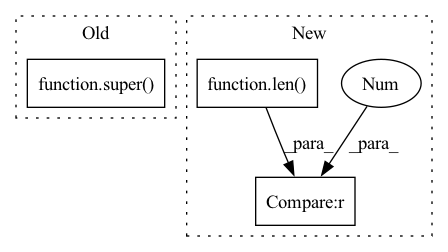

Pattern ID :35166

Before Change
class PcDartsCNN(DartsCNN):
def __init__(self, C=16, n_classes=10, n_layers=8, n_nodes=4, basic_op_list=[]):
super(Network, self).__init__()
self._C = C
self._num_classes = num_classes
self._layers = layers
After Change
self.n_layers = n_layers // 8
self.n_nodes = n_nodes // 4
self.basic_op_list = ["max_pool_3x3", "avg_pool_3x3", "skip_connect", "sep_conv_3x3",
"sep_conv_5x5", "dil_conv_3x3", "dil_conv_5x5", "none"] if len(basic_op_list) == 0 else basic_op_list
C_cur = stem_multiplier * C // 3 * 16 = 48
self.stem = nn.Sequential(
nn.Conv2d(self.C_in, C_cur, 3, 1, 1, bias=False),
In pattern: SUPERPATTERN
Frequency: 3
Non-data size: 3
Instances
Fragment ID: 100235529
Project Name: mac-automl/xnas
Commit Name: 76a8cceff47676b252e8c47e4ba2e107cb9a6171
Time: 2020-07-13
Author: 1004463561@qq.com
File Name: xnas/search_algorithm/pc_darts.py
M Class Name: PcDartsCNN
N Class Name: PcDartsCNN
M Method Name: __init__(6)
N Method Name: __init__(6)
M Parent Class: nn.Module
N Parent Class: DartsCNN
M File Name: xnas/search_algorithm/pc_darts.py
N File Name: xnas/search_algorithm/pc_darts.py
M Start Line: 192
M End Line: 223
N Start Line: 294
N End Line: 332
'>
Before Change
class CLBuffer(cl.Buffer):
def __init__(self, size):
CL.mem_used += size
super().__init__(CL().cl_ctx, cl.mem_flags.READ_WRITE, size)
def __del__(self):
CL.mem_used -= self.size
After Change
CLCACHE = int(os.getenv("CLCACHE", "0"))
class CLBuffer:
def __init__(self, size):
if len(CL.BUFFER_CACHE[size]) > 0: self.cl = CL.BUFFER_CACHE[size].pop()
else:
CL.mem_used += size
self.cl = cl.Buffer(CL().cl_ctx, cl.mem_flags.READ_WRITE, size)
'>
Fragment ID: 100235531
Project Name: geohot/tinygrad
Commit Name: 425b0dcd58ae0969f9e5e0ee556e255f6f2d8708
Time: 2022-07-04
Author: geohot@gmail.com
File Name: tinygrad/llops/ops_gpu.py
M Class Name: CLBuffer
N Class Name: CLBuffer
M Method Name: __init__(2)
N Method Name: __init__(2)
M Parent Class:
N Parent Class: cl.Buffer
M File Name: tinygrad/llops/ops_gpu.py
N File Name: tinygrad/llops/ops_gpu.py
M Start Line: 31
M End Line: 32
N Start Line: 14
N End Line: 19
'>
Before Change
return x
def reorder_incremental_state(self, incremental_state, new_order):
super().reorder_incremental_state(incremental_state, new_order)
cached_state = utils.get_incremental_state(self, incremental_state, "cached_state")
if cached_state is None:
return
After Change
return [state_i.index_select(0, new_order) for state_i in state]
def reorder_incremental_state(self, incremental_state: Optional[Dict[str, Dict[str, Optional[Tensor]]]], new_order):
if incremental_state is None or len(incremental_state) == 0:
return
prev_hiddens, prev_cells, input_feed = self.get_cached_state(incremental_state)
cached_state = (prev_hiddens, prev_cells, [input_feed])
'>
Fragment ID: 100235530
Project Name: kssteven418/i-bert
Commit Name: 57526c63433c0b1c997fc91c0881867532567266
Time: 2020-04-16
Author: xfrui@fb.com
File Name: fairseq/models/lstm.py
M Class Name: LSTMDecoder
N Class Name: LSTMDecoder
M Method Name: reorder_incremental_state(3)
N Method Name: reorder_incremental_state(3)
M Parent Class: FairseqIncrementalDecoder
N Parent Class: FairseqIncrementalDecoder
M File Name: fairseq/models/lstm.py
N File Name: fairseq/models/lstm.py
M Start Line: 498
M End Line: 513
N Start Line: 538
N End Line: 550